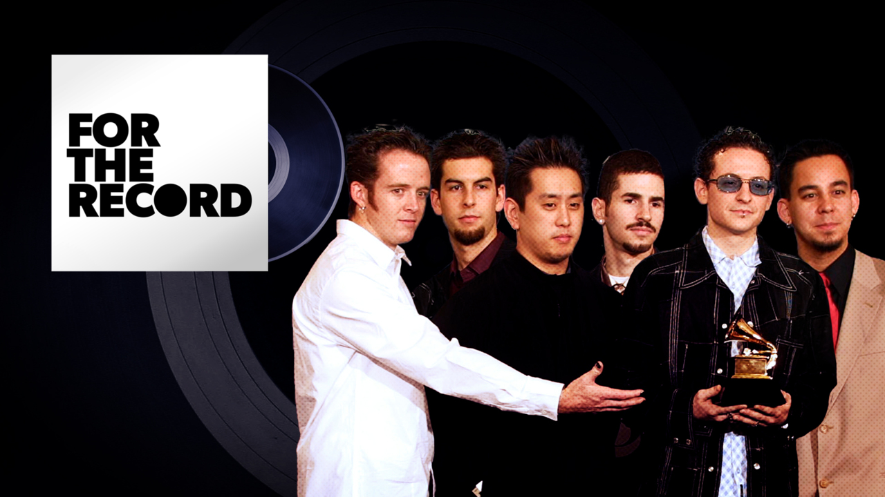

List of awards and nominations received by Linkin Park Band
Linkin Park is an American rock band from Agoura Hills, California.Originally consisting of three high school friends, Linkin Park's foundation was anchored by Mike Shinoda and Brad Delson along with Rob Bourdon. After graduating from high school, the California natives began to take their musical interests more seriously, recruiting Joe Hahn, Dave "Phoenix" Farrell, and Mark Wakefield to perform in their band then titled Xero. Though limited in resources, the band began recording and producing songs within Shinoda's makeshift bedroom studio in 1996. After they failed to land a record deal, however, tensions and frustration within the band grew, and the lack of success and stalemate in progress prompted Wakefield, at that time the band's vocalist, to leave the band in search for other projects. Linkin Park released its debut album Hybrid Theory on October 24, 2000. In 2002, the band won a Grammy Award for Best Hard Rock Performance. Linkin Park's second album Meteora sold more than 800,000 copies during its first week, and it ranked as the best selling album on the Billboard charts at the time. "Breaking the Habit", a single from the album, won an MTV Asia Award. "Somewhere I Belong", also on Meteora, won a MTV Video Music Award. After the success of Meteora, the band postponed working on a new studio album for several years. Linkin Park continued to tour and work on side projects; during the same period, Bennington appeared on DJ Lethal’s State of the Art and worked with Dead By Sunrise, while Shinoda worked with Depeche Mode. In 2004, the band worked with Jay-Z to produce an album entitled Collision Course; "Numb/Encore", a single from the album, won a Grammy Award the next year. Linkin Park's next album Minutes To Midnight was released in 2007 despite initially stating the album would debut in 2006. The album was nominated for a TMF Award in 2007, while "What I've Done", a single from the album, was nominated for an MTV Video Music Award. Linkin Park has won in the Favourite International Artist of Asia category at the 2008 MTV Asia Awards. Overall, Linkin Park has received a total of 67 awards from 197 nominations. Their next album was A Thousand Suns released in 2010 and the fifth album Living Things was released in June, 2012